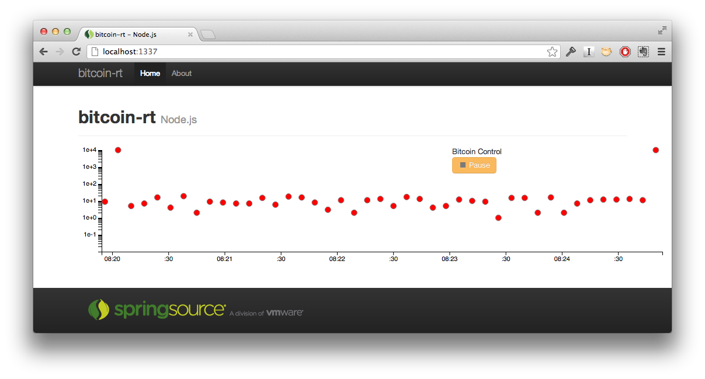
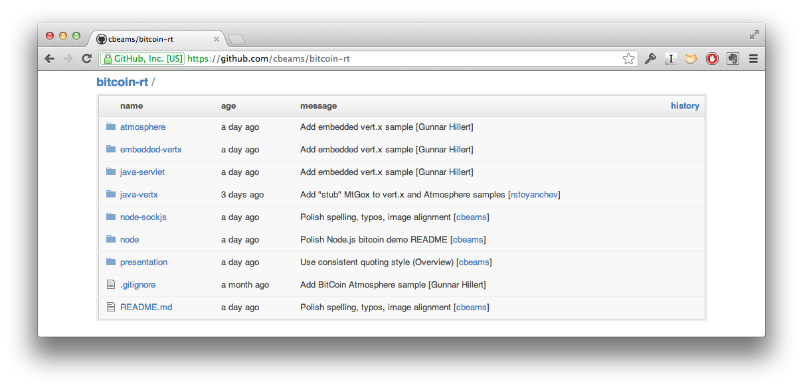
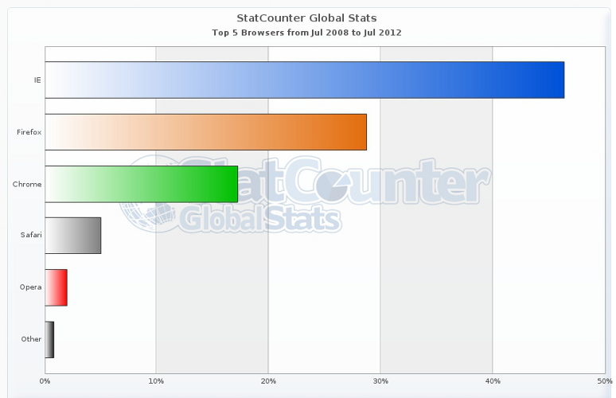
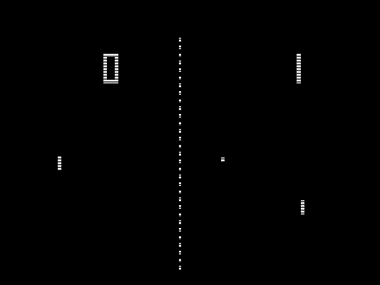

Intro to WebSockets
Chris Beams
Gunnar Hillert
Rossen Stoyanchev
Objective
- Survey the lay of the land
- Less focus on syntax and mechanics
- Broad, pragmatic perspective
- Special emphasis on Java
WebSocket 101
The Problem
- Some web apps need two-way communication / rapid updates
- AJAX and Comet techniques can amount to an
"abuse of HTTP"
The Problem
- Too many connections
- Too much overhead
- Too great a burden on the client
The Usual Suspects
- Trading
- Chat
- Gaming
- Collaboration
- Visualization
: * show Asana
The Goal
"provide a mechanism for browser-based applications that need two-way communication with servers that does not rely on opening multiple HTTP connections"
- RFC 6455, The WebSocket Protocol
The Approach
- Two-way messaging over a single connection
- Layer on TCP
- Not HTTP, but uses HTTP to bootstrap
- Extremely low-overhead
The WebSocket HTTP Handshake
GET /chat HTTP/1.1
Host: server.example.com
Upgrade: websocket
Connection: Upgrade
HTTP/1.1 101 Switching Protocols
Upgrade: websocket
Connection: Upgrade
: TODO: use actual example from demos or from websockets.org * mention something about original intent of 101/Upgrade, i.e. for upgrading to newer versions of HTTP, not necessarily another protocol entirely.
What's in a Frame?
0 1 2 3
0 1 2 3 4 5 6 7 8 9 0 1 2 3 4 5 6 7 8 9 0 1 2 3 4 5 6 7 8 9 0 1
+-+-+-+-+-------+-+-------------+-------------------------------+
|F|R|R|R| opcode|M| Payload len | Extended payload length |
|I|S|S|S| (4) |A| (7) | (16/64) |
|N|V|V|V| |S| | (if payload len==126/127) |
| |1|2|3| |K| | |
+-+-+-+-+-------+-+-------------+ - - - - - - - - - - - - - - - +
| Extended payload length continued, if payload len == 127 |
+ - - - - - - - - - - - - - - - +-------------------------------+
| |Masking-key, if MASK set to 1 |
+-------------------------------+-------------------------------+
| Masking-key (continued) | Payload Data |
+-------------------------------- - - - - - - - - - - - - - - - +
: Payload Data continued ... :
+ - - - - - - - - - - - - - - - - - - - - - - - - - - - - - - - +
| Payload Data continued ... |
+---------------------------------------------------------------+


: * briefly explain bitcoin * actually show bitcoinmonitor, show long-polling with chrome dev tools * start up
bitcoin-rt vs bitcoinmonitor
- WebSockets instead of long polling
- d3.js instead of JQuery UI
- MongoDB for persistence

bitcoin-rt implementations
- Node.js
- Node.js + SockJS
- Java + Tomcat native WebSocket API
- Java + Atmosphere
- Java + Vert.x

demo source
http://github.com/cbeams/bitcoin-rt
bitcoin-rt: Node.js demo
: * show mongod running * show client code
WebSocket benefits
- more resource-efficient
- lower-latency data
- conceptually simpler
if WebSocket is so great...
- Why does bitcoinmonitor use long polling?
- What about other sites?
Browser Support

Browser Share World-Wide

Browser Share China

Browser Versions

HTTP Proxies
- Content caching, internet connectivity, filtering
- Can monitor or close connections, buffer unencrypted traffic
- Designed for HTTP-based document transfer
- Not for long-lived connections
Proxy Traversal
"Today, most transparent proxy servers will not yet be familiar with the Web Socket protocol and these proxy servers will be unable to support the Web Socket protocol"
- Peter Lubbers, in a 2010 InfoQ article
Proxy Issues
- Explicit proxies with HTTP Connect
- Transparent proxies propagation of
Upgradeheader - Retaining the
Connectionheader - WebSocket frames vs HTTP traffic
A Few Rules of Thumb
"wss:"provides a much better chance of success- Same for browsers using explicit proxies
- Transparent proxies can support WebSocket
but must be configured explicitly
Keeping Connections Alive
- Internet inherently unreliable
- Both server and client can go away
- Wireless connection may fade out
- and so on
A New Set of Challenges
- Keep-alive ("ping!")
- Heartbeat ("I'm still here!")
- Message delivery guarantee
- Buffering
How Did We Get Here?
Some history...
- 1996 - Java Applets/Netscape 2.0
- 1999/2000 - XMLHttpRequest (XHR)
- 2003 - Macromedia/Adobe Flash (RTMP Protocol)
Comet
- March 2006 - Comet - Alex Russell
- event-driven, server-push data streaming
- e.g. in GMail's GTalk interface
Comet
- XHR long-polling / XHR multipart-replace / XHR Streaming
- htmlfile ActiveX Object
- Server-sent events (SSE) - Part of HTML5/W3C (EventSource)
Path to Websockets
- 2007 - TCPConnection API and protocol (Ian Hickson)
- WebSocket - First public draft January 2008
IETF Standardization
(Network Working Group)
- 2009-Jan - hixie-00
- 2010-Feb - hixie-75 - Chrome 4
- 2010-May - hixie-76 - Disabled in FF/Opera
IETF Standardization
(HyBi Working Group)
- 2010-May - hybi-00 - Same as hixie-76
- 2011-April - hybi-07 - Firefox 6
- 2011-Dec - RFC6455
RFC 6455 - The WebSocket Protocol
- Final Version: Dec 2011
- http://tools.ietf.org/html/rfc6455
Websocket Protocol Details
- TCP-based protocol
- HTTP used solely for upgrade request (Status Code 101)
- Bi-directional, full-duplex
- Data Frames can be Text (UTF-8) or arbitrary Binary data
Websocket Protocol Details
0 1 2 3
0 1 2 3 4 5 6 7 8 9 0 1 2 3 4 5 6 7 8 9 0 1 2 3 4 5 6 7 8 9 0 1
+-+-+-+-+-------+-+-------------+-------------------------------+
|F|R|R|R| opcode|M| Payload len | Extended payload length |
|I|S|S|S| (4) |A| (7) | (16/64) |
|N|V|V|V| |S| | (if payload len==126/127) |
| |1|2|3| |K| | |
+-+-+-+-+-------+-+-------------+ - - - - - - - - - - - - - - - +
| Extended payload length continued, if payload len == 127 |
+ - - - - - - - - - - - - - - - +-------------------------------+
| |Masking-key, if MASK set to 1 |
+-------------------------------+-------------------------------+
| Masking-key (continued) | Payload Data |
+-------------------------------- - - - - - - - - - - - - - - - +
: Payload Data continued ... :
+ - - - - - - - - - - - - - - - - - - - - - - - - - - - - - - - +
| Payload Data continued ... |
+---------------------------------------------------------------+
Websocket Protocol Details
- FIN (1 bit) - Final fragment in a message
- RSV1-3 (1 bit each) - Reserved for extensions
Websocket Protocol Details
- Opcode (4 bits) - Which type of payload
- Text frame, binary frame, control frames
- Continuation frame indicates data belongs to previous frame
Websocket Protocol Details
- Mask (1 bit)
- Clients must mask
- Minimize data sniffing + Proxy cache-poisoning
- Masking-key (32bit) - Random (XOR) for each frame
Websocket Protocol Details
- Payload length (7, 16 or 64 bit) in bytes
- Extension data + Application data
Websocket Control Frames

Websocket Control Frames
Communicate state about the WebSocket
Close (0x8)
- Ping (0x9)
Pong (0xA)
More possible in future
- 125 bytes or less
Close Frame
- Terminates WebSocket connection
- Can contain a body (UTF-8 encoded)
- Defines a set of Status Codes, e.g:
- 1000 = normal closure
- 1001 = endpoint is "going away"
Ping + Pong Frame
- Serves as keepalive (Ping followed by Pong)
- Check whether the remote endpoint is still responsive
- Can be sent at any time (Websocket established, before close)
- Just Pongs (unsolicited) = unidirectional heartbeat
WebSocket Schemes
- Unencrypted: ws://
- Encrypted: wss://
- Use encrypted scheme
Extensions
- WebSocket Per-frame Compression (Draft)
- Multiplexing Extension (Draft)
- Extensions Header: Sec-WebSocket-Extensions
- Used in the opening handshake (HTTP)
Multiplexing Extension (MUX) for WebSockets
- http://tools.ietf.org/html/draft-ietf-hybi-websocket-multiplexing-08
- separate logical connections over underlying transport connection
Sub-Protocols
- Sub-Protocol Header: Sec-WebSocket-Protocol
- IANA Registry:
- http://www.iana.org/assignments/websocket/websocket.xml
HTML5 WebSockets =
W3C API + IETF Protocol
The WebSocket API
- W3C Candidate Recommendation 20 Sep 2012
- http://www.w3.org/TR/websockets/
- Browser client-side API
The WebSocket API
- Binary data supported: Blob or ArrayBuffer format
- Can inspect extensions (read-only)
- No support for ping/pong frames
The readyState attribute
- CONNECTING (0) - Connection not yet established
- OPEN (1) - Connection is established + communication possible
- CLOSING (2) - Connection going through closing handshake / close() method called
- CLOSED (3) - Connection is closed / could not be opened
Event Handlers
- onopen
- onmessage
- onerror
- onclose
Code Sample
var socket = new WebSocket(
'ws://localhost:8080/bitcoin-java-servlet/tomcat');
...
socket.onmessage = function(event) {
console.log(event.data);
var trade = JSON.parse(event.data);
...
};
...JSR 356: Java API for WebSocket
- Early Draft Review, Sep 2012
- http://jcp.org/en/jsr/detail?id=356
Non-Java Solutions
Node.js
More Than Just WebSockets
- XHR streaming
- XHR long polling
- Hidden iframe
- Flash socket
- Polling
Socket.IO

SockJS Transports

Socket.IO vs SockJS
Socket.IOmore popularSockJSfocused on transports, horizontal scalability- Discussion thread
Where We Are In Java Land
Tomcat
WebSocketServlet- Since 7.0.27 (03/2012)
- Backport to 6.0.35 Issue 52918
- Fairly minimal, server-side only
bitcoin-rt: Tomcat demo
: * show mongod running * show client code
Jetty
- Since Jetty 7.x (early adoption, complex)
- Revised in Jetty 9
- Builds on Java 7, messages not frames, annotations
Glassfish
- Since 3.1 (02/2011)
- Exposes frames, server-side only
- Like with earlier Jetty versions, a major revision is likely
Other Implementations
Client Side
- AsyncHttpClient
- Jetty
- Netty
- vert.x
- Grizzly
Java API for WebSocket (JSR-356)
- Original discussion started in JSR-340 (Servlet 3.1)
- Later split out into separate spec
- Servlet spec will have an upgrade option
- JSR-356 will likely not depend on Servlet API
What's under discussion
- Client and server-side API
- Use of annotations
- Support for extensions
- Security considerations
- Thread model
Resources
Building a Non-Trivial Application
: 15 min
A Few Conclusions
- WebSocket technology is promising
- Not a silver bullet
- Complement to REST
A Few Conclusions
- Potential replacement for Comet techniques
- But the need for fallback options will persist
A Few Conclusions
- Integrating WebSockets into a real app is not yet trivial
- But now is the time to begin thinking about it
- "Pure WebSocket" applications in the wild unlikely
Predictions
- A consolidation of 'fallback protocols'
- Leading to wide adoption in various application frameworks
- SockJS currently the most promising effort
Many questions remain
- usage patterns
- higher-level protocols
- XMPP, AMQP, JMS
Building a real app today
- Commercial vendors have a lot to offer
- Particularly (blog, websocket.org)
Predictions: Java
- JSR-356 will be important
- Frameworks have a big role to play
- Atmosphere is there today
- Dedicated Spring support in consideration
More Info
- Jeremy Grelle's Async session @2:45p